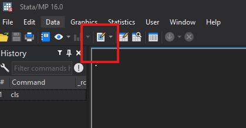
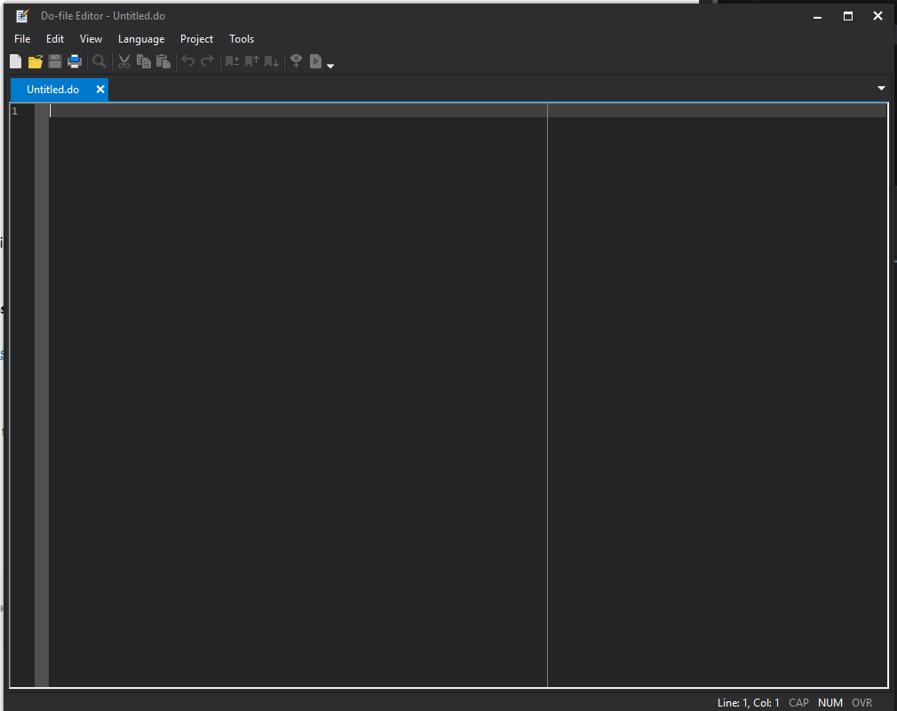
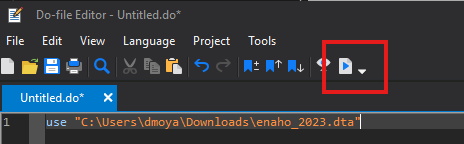
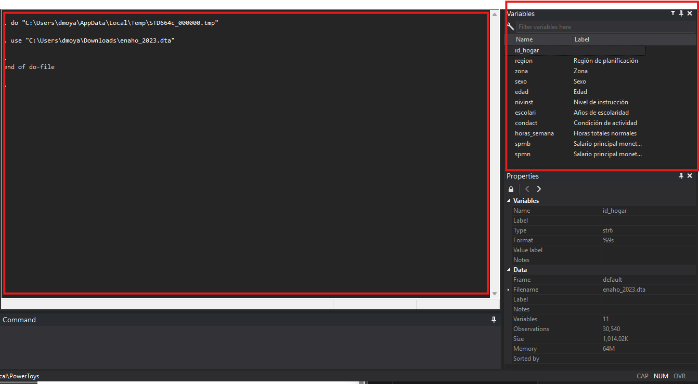
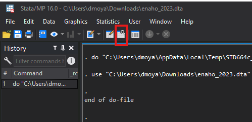
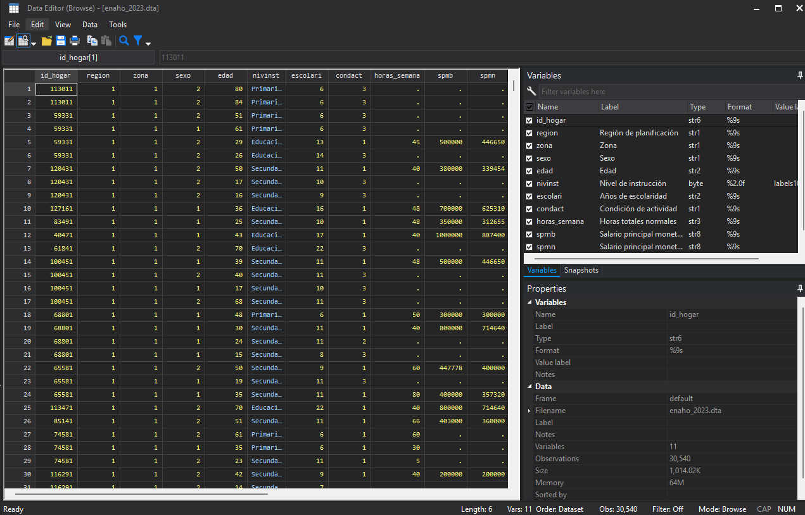
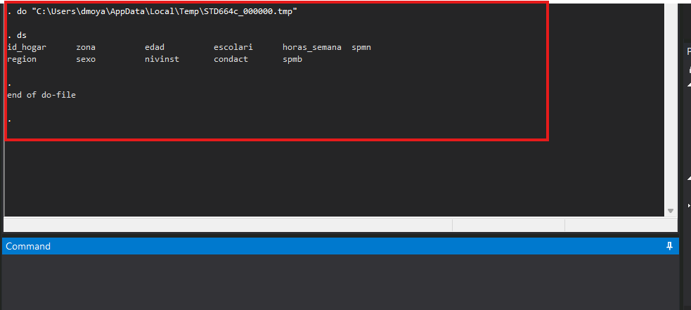
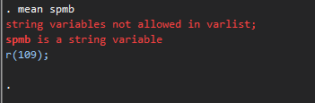
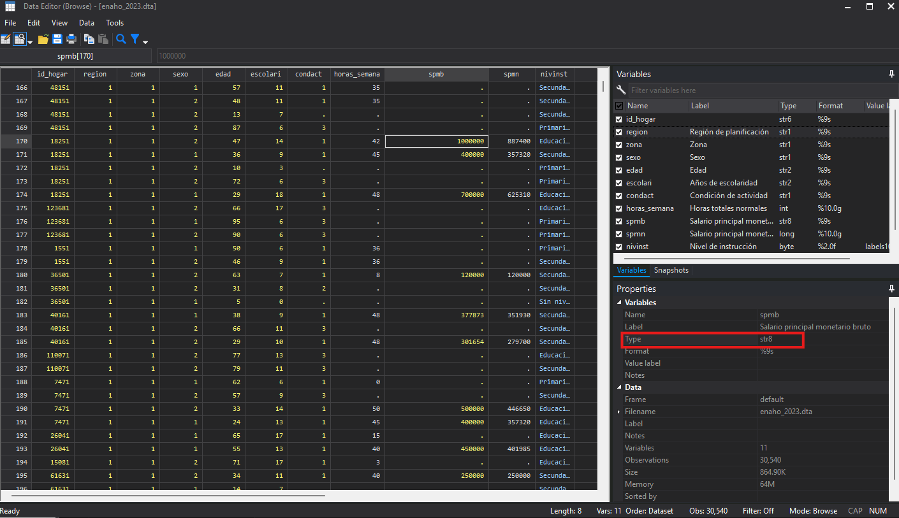

Interfaz de STATA e importación de bases de datos
Para empezar a trabajar con una base de datos lo primero es abrir un archivo de tipo do, donde vamos a escribir los comandos para que decirle a STATA lo que queremos que haga.

Esto va a abrir un cuaderno que se vería así.

Una vez abierto el dofile podemos empezar a trabajar con STATA
Comandos
use
El primer comando que veremos es use el cual nos sirve para cargar archivos de formato STATA
Por ejemplo
Una vez que escribe esto en el dofile puede correr el comando usando ctrl+D o dando click en el siguiente ícono

Posibles errores
- Verifique que la ruta sea correcta (puede copiarla seleccionando el archivo y usando
ctrl+shift+c) - Si intenta volver a correr el comando posiblemente tenga un error (explicación más adelante)
Luego de ejecutar un comando, STATA nos indica el resultado en la consola que es la pantalla grande que se puede ver al inicio. Aquí nos muestra que ejeutó el comando use.
Puede también verificar que cargó los datos revisando la pestaña de variables que se encuentra a la derecha

Seguro se puede estar preguntando ¿dónde veo los datos?
browse
Para ver los datos podemos usar el comando browse o podemos dar click en el explorador de variables
Opción 1:
Opción 2:
De click en el siguiente ícono

En cualquiera de los dos casos se abrirá una pestaña adicional con los datos en formato de tabla

Aquí puede ver las diferentes variables con las que contamos, en nuestro caso estamos trabajando con la encuesta de hogares, por lo que cada fila representa una persona y sus características, por ejemplo: la región, la zona, el sexo, su nivel de instrucción, etc.
ds
Si quisieramos simplemente ver las variables que tenemos disponibles podemos usar ds

order
A veces trabajamos con bases de datos muy grandes. Una encuesta de hogares puede tener hasta más de 500 columnas. ¿Qué pasaría por ejemplo, si variable de interés está en la columna 400?
Para estos casos es útil saber como reordenar la base de datos para que las columnas que nos interesan sean fáciles de ver.
Usando order podemos indicarle a STATA qué columnas queremos que nos muestre al inicio
opciones
Opciones
También es posible agregar opciones a los comandos con la finalidad de indicar cosas adicionales
Por ejemplo, si queremos ordenar la columna, detrás de alguna otra podemos indicarlo.
En general para poner añadir opciones a cualquier comando se sigue la siguiente syntaxis
Cuidado
Es importante añadir los paréntesis después de after, ya que STATA separa las opciones por espacios.
Entonces con los paréntesis le decimos a STATA el argumento a usar para la opción after
Si solo escribimos
STATA piensa que region es otra opción y nos dará error
En general se escribe así
También podemos decirle que acomode la variable al final
Tipos de variables
Un tema muy importante a tener en cuenta es que existen diferentes tipos de variables. Con esto nos referimos a la forma en la que STATA guarda los valores.
Qué tipos existen
| Tipo | Descripción |
|---|---|
| Texto | |
String |
Texto o caracteres |
| Numéricas | |
byte |
Entero muy pequeño |
int |
Entero mediano |
long |
Entero grande |
float |
Decimal con precisión simple |
double |
Decimal con mayor precisión |
Problemas
Esto puede parecer poco importante, pero es necesario tenerlo en cuenta para evitar errores como este:

Cuando STATA nos muestra un texto rojo significa que no pudo ejecutar el comando debido a un error.
En este caso intentamos calcular el promedio del salario bruto de las personas, pero el obtenemos un error que dice spmb es una variable de tipo string.
Es decir, a pesar de que podemos ver números en la columna STATA tiene la variable guardada como texto, por lo que no puede calcular el promedio.

Podemos observar el tipo de variable almacenado en STATA en la pestaña de propiedades abajo a la derecha y veremos que el tipo dice str o sea string
Convertir variables
En estos casos es necesario convertir el tipo de variables
destring
destring variable, replace
*replace remplaza la variable original
*Si no queremos remplazar la variable original
destring variable, gen(nombre_variable_nueva)
Ejemplo
Resultado
Mean estimation Number of obs = 9,562
--------------------------------------------------------------
| Mean Std. Err. [95% Conf. Interval]
-------------+------------------------------------------------
spmb | 536077.6 5269.032 525749.2 546406
--------------------------------------------------------------
*Ya no obtenemos errores!
gsort
Con gsort podemos ordenar la base de datos con respecto a alguna variable
Ejemplo
Resumen de comandos
| Comando | Función |
|---|---|
use |
Cargar la base de datos |
browse |
Abrir explorador de variables |
ds |
Listar variables |
order |
Acomodar columnas |
destring |
Convertir string a número |
gsort |
Ordenar la base de datos |